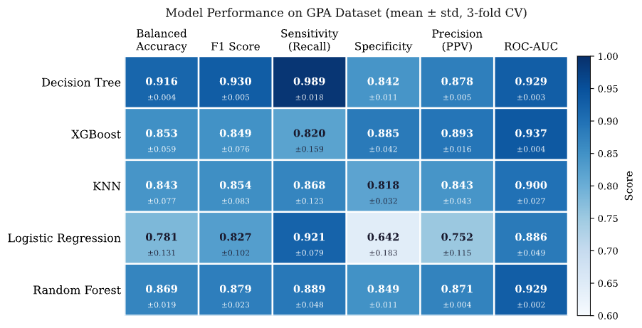
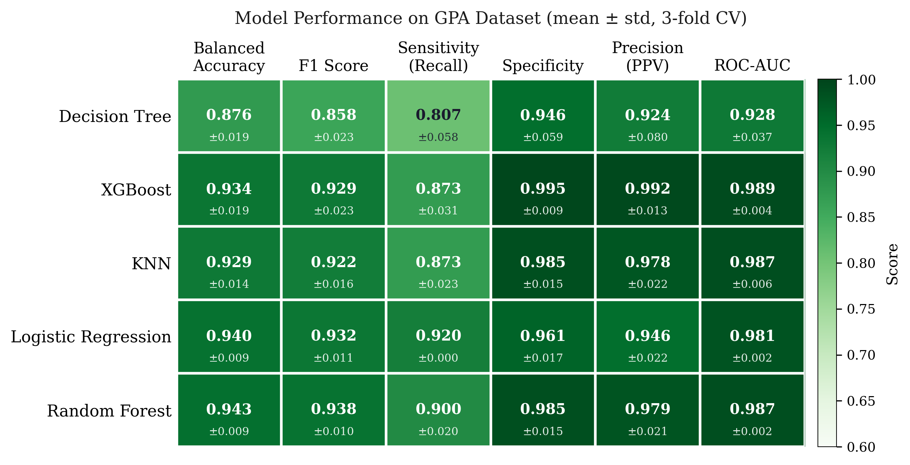
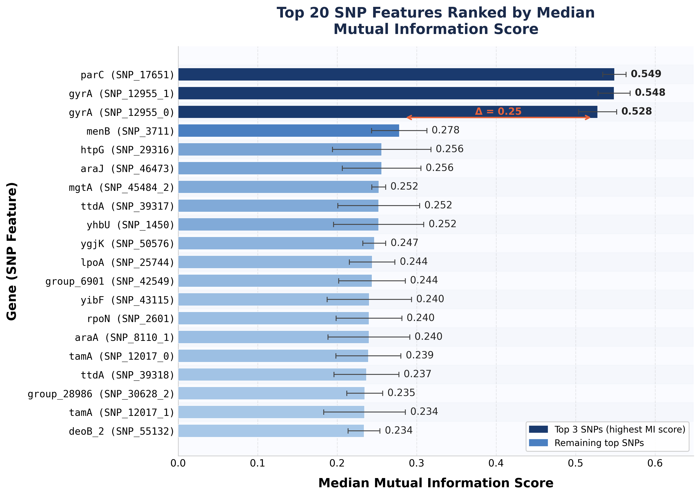
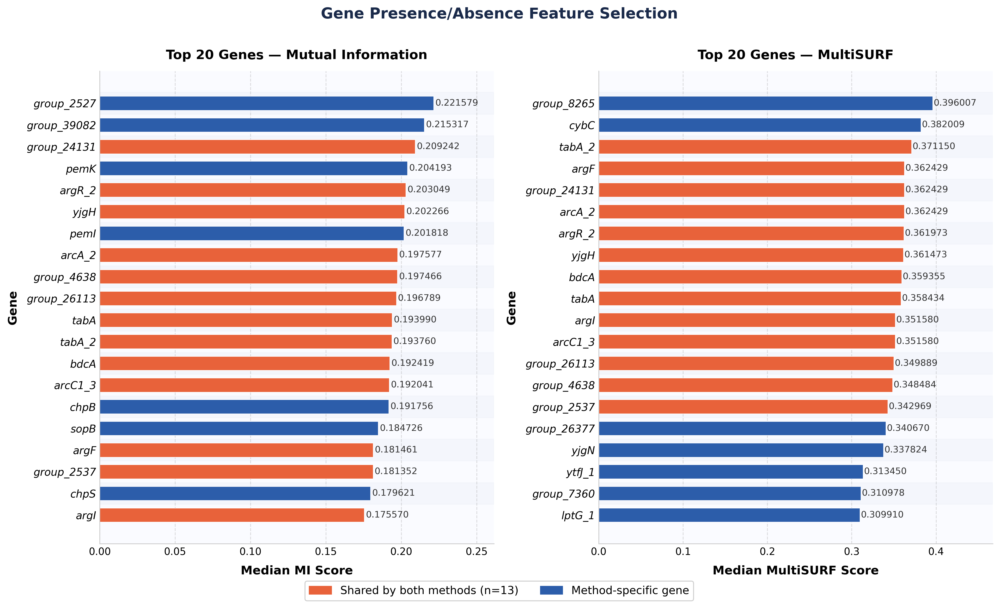
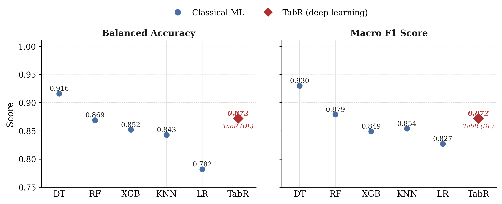

My thesis investigated how machine learning can predict antibiotic resistance in E. coli directly from its genome.
I focused on Ciprofloxacin (CIP) — a critical fluoroquinolone antibiotic with rising resistance globally — and built an end-to-end ML pipeline on 588 clinical E. coli isolates from three published studies.
The work compared two genomic feature representations derived from the same isolates: a gene presence/absence matrix (capturing horizontally acquired resistance) and a single-nucleotide polymorphism (SNP) matrix (capturing chromosomal mutations).
I benchmarked five classical machine learning models against a retrieval-augmented deep learning model (TabR) on both representations, achieving 0.94 balanced accuracy and 0.989 ROC-AUC on a held-out test set.
The Problem
Antibiotic resistance causes more than 1 million deaths each year worldwide. E. coli is one of the most common drug-resistant pathogens, responsible for urinary tract and bloodstream infections.
Ciprofloxacin — a key treatment for these infections — is increasingly losing effectiveness as resistance spreads.
The standard way to test resistance requires growing bacteria in the lab and can delay appropriate treatment.
Whole-genome sequencing offers a faster path: predict resistance directly from the genome.
But an E. coli genome contains thousands of genes and tens of thousands of mutations, only a small fraction of which actually drive resistance.
My thesis asked: which genomic features best predict resistance, and how should they be represented for machine learning?
Methods
I built an end-to-end ML pipeline that turns raw bacterial genomes into resistance predictions.
The work used 588 clinical E. coli isolates from three published bloodstream-infection studies (England, Norway, and a US military healthcare network), each labeled Resistant or Susceptible to Ciprofloxacin based on EUCAST clinical breakpoints.
Bioinformatics pipeline: 588 E. coli genomes → SNP and GPA feature matrices.
Starting from the 588 isolates, a pangenome was constructed and categorized into core, soft-core, and shell genes.
A reference shell genome was generated from these categories and used as the alignment anchor for Snippy variant calling, producing a core genome alignment across all isolates.
From this single alignment, I derived two genomic feature representations in parallel:
SNP Matrix. Extracted single-nucleotide polymorphism positions from the alignment, filtered by minor allele frequency (MAF ≥ 0.05) and gap proportion (≤ 10%). One-hot encoding multi-allelic positions produced a 588 × 67,259 feature matrix, capturing chromosomal mutations.
Gene Presence/Absence Matrix. Designed a coordinate-mapping algorithm to slice the alignment into per-gene regions using cumulative gene lengths from the reference. Each gene was encoded as present or absent per isolate based on gap proportion. After filtering constant features, this yielded a 588 × 3,625 binary matrix, capturing horizontally acquired resistance.
Modeling
Feature Selection. Applied Mutual Information for the SNP dataset (42,178 informative features retained) and Mutual Information + MultiSURF for the GPA dataset (2,946 informative genes retained).
Models. Benchmarked five classical models — Decision Tree, Random Forest, XGBoost, K-Nearest Neighbors, Logistic Regression — against TabR, a retrieval-augmented deep learning architecture for tabular data.
Training & Evaluation. Stratified 80/20 train-test split (470 train, 118 test). Hyperparameters tuned with Optuna (TPE sampler, 100 trials per model per fold) under 3-fold stratified cross-validation, optimizing balanced accuracy to account for the mild class imbalance (53% susceptible vs. 47% resistant).
Key Results
Three findings stood out from the model evaluation, summarized in the figures below.
Gene presence/absence outperformed SNP features
Models trained on the GPA matrix achieved higher and more consistent performance than those trained on the SNP matrix.
Random Forest on GPA features achieved the best overall result: 0.94 balanced accuracy, 0.94 F1, and 0.99 ROC-AUC on the held-out test set (n = 118).


Model performance heatmaps: SNP dataset (left) vs. GPA dataset (right). Darker = stronger.
parC and gyrA dominated SNP signal; GPA signal was more distributed
Feature importance analysis revealed strikingly different biological patterns between the two representations.
In the SNP dataset, three variants in parC and gyrA dominated the rankings — consistent with the well-established role of chromosomal mutations in these quinolone resistance-determining regions.
The GPA dataset showed a broader, more distributed set of informative genes, with substantial overlap between Mutual Information and MultiSURF rankings (13 of top 20 shared).


Top 20 features by Mutual Information: SNP (left) and GPA (right).
Classical ML outperformed deep learning at this scale
Across both feature representations, classical machine learning models outperformed the retrieval-augmented deep learning model (TabR) on threshold-dependent metrics.
On the SNP dataset, Decision Tree beat TabR by 4.4 points in balanced accuracy; on GPA, Random Forest beat TabR by 1.8 points.
ROC-AUC differences were small, suggesting comparable ranking ability — but at the 588-isolate scale, deep learning provided no measurable advantage over well-tuned classical methods.

Best classical models vs. TabR: SNP (left) and GPA (right).
Other Research
Conference Presentations
2024
Pangenome Pipeline for Predicting Antibiotic Resistance in E. coli
SACNAS National Conference, October 2024 — CodeLab, SF State University
Team poster presentation on early-stage pangenome framework development. Contributed to dataset integration and pangenome construction across three published E. coli studies (Mills, Gladstone, Kalloneen). The poster outlined our planned approach to combining SNP and gene presence/absence features for cross-dataset antibiotic resistance prediction.
My role: Co-developer of bioinformatics pipeline and poster presenter on behalf of the team.
2024
Comparing VAE and CNN Architectures for Bacterial Resistance Prediction
TAGC24 Conference — March 2024, Washington DC
Team poster comparing variational autoencoder (VAE) and convolutional neural network (CNN) architectures for predicting antibiotic resistance from E. coli genomes converted into image format. The work benchmarked 501 strains and tested whether image-based deep learning could match traditional sequence-based approaches.
My role: Contributed to the VAE pipeline alongside a teammate; other teammates implemented the CNN comparison and additional models.
2023
Multislice Multimodality Tumor Segmentation
COSE Conference — 2023, SFSU College of Science & Engineering
Brain tumor segmentation from multi-modal MRI scans (T1, T2, T1CE, FLAIR) using a U-Net deep learning framework trained on the BraTS dataset. The project evaluated the relative effectiveness of each MRI sequence for classifying tumor subregions — enhancing tumor, non-enhancing tumor, and peritumoral edema — to inform multi-modal fusion strategies for clinical segmentation pipelines.
My role: Designed and implemented the U-Net architecture and multi-modal preprocessing pipeline; conducted comparative modality analysis with teammates Brandon Bahr Maravilla and Yoonji Lee under Dr. Ilmi Yoon.